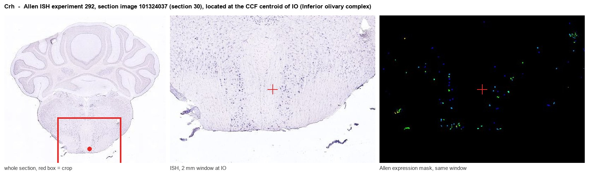
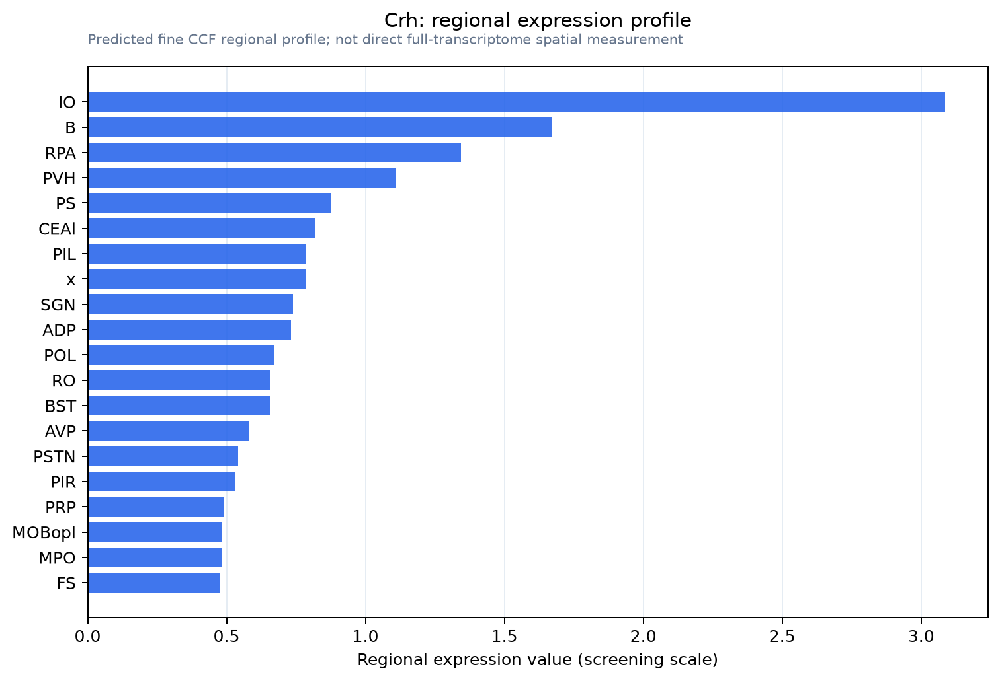

Crh
Spatial tier: STRICT_EXCLUSIVE · Class: OTHER · Top region: IO (Inferior olivary complex) · Positive regions: 8/554
46.8Discovery Score
42.4Targetability Score
CEvidence grade C
What this means: Crh: predicted fine-region profile is strict-exclusive, with 8 positive regions out of 554 (limit 12); direct spatial validation is required.
Function in IO: evidence, prediction, innovation
- Gene function
- Crh encodes corticotropin-releasing hormone (CRF), a 41-amino-acid secreted neuropeptide processed from a larger precursor. It acts on two class-B GPCRs, CRHR1 and CRHR2, which couple mainly to Gs and raise cAMP/PKA signalling. In the hypothalamus it drives the pituitary-adrenal stress axis; elsewhere it works as a slow neuromodulator of synaptic gain.
- Region function
- The inferior olivary complex is the sole source of cerebellar climbing fibres, delivering error/timing signals that drive complex spikes in Purkinje cells and gate cerebellar motor learning and coordination.
- Published in this region
- direct IO is one of the densest Crh-expressing nuclei in the mouse brain (Peng et al. 2017 quantified CRH neuron density in IO as comparable to PVH and Barrington's nucleus). Sawada et al. 2008 mapped CRF-immunopositive climbing fibres as parasagittal stripes across the mouse cerebellar cortex. Ezra-Nevo et al. 2018 knocked down CRF specifically in the IO and found impaired motor performance under challenging conditions, with chronic social defeat lowering IO-CRF; Tian et al. 2008 showed olivary stimulation redistributes cerebellar CRHR1.
- Predicted function
- Prediction: Olivary CRF is co-released with glutamate at climbing-fibre terminals and sets the gain of complex-spike-driven plasticity via CRHR1 on Purkinje cells, interneurons and Bergmann glia. IO-restricted Crh deletion should leave basal locomotion intact but degrade adaptive motor learning (accelerating rotarod, erratic beam, VOR/eyeblink adaptation), and should blunt stress-induced modulation of motor performance. CRHR1 antagonism in cerebellar cortex should phenocopy the knockdown.
- Innovation
- ★★☆☆☆ 2/5 CRF in the olivo-cerebellar system has an established literature including IO-specific knockdown, so the main novelty left is cell-type resolution and behaviour-linked release.
- Tools
- Crh-IRES-Cre (JAX 012704, B6(Cg)-Crh<tm1(cre)Zjh>/J), Crh-floxed alleles for AAV-Cre knockdown in IO (approach of Ezra-Nevo 2018), CRF antisera for climbing-fibre immunostaining, CRHR1 antagonists antalarmin and NBI-27914, non-selective peptide antagonist alpha-helical CRF(9-41).
- References
Direct evidence located at the region

Allen ISH experiment 292, section image 101324037 (section 30): the section that contains the CCF centroid of Inferior olivary complex according to the Allen image-to-atlas alignment (reference_to_image), with a 2 mm window around that point. Left: whole section, red box = window. Middle: ISH signal. Right: Allen's expression-mask view of the same window. open this image in the Allen viewer
Look it up yourself: Allen Mouse Brain ISH for CrhAllen reference atlas: IO (structure 83)ABC Atlas MERFISH viewer(in the ABC Atlas choose dataset MERFISH-C57BL6J-638850-CCF, colour cells by gene "Crh" or by parcellation_substructure "IO")All genes confined to IO + 3-D brain
Direct spatial evidence
MERFISH REGION LOCATOR

Regional expression figure

Predicted WMB × fine-CCF profile; not direct full-transcriptome spatial measurement.
Spatial profile
Evidence and specificity
- Evidence status
- PREDICTED_FINE
- Direct sources
- None; predicted localization only
- Exclusive threshold
- 12 positive regions out of 554
- Spatial specificity
- 0.348
- Top-region fraction
- 0.127
- Filter status
- PASS
Interpretation limits
- Cell-type-to-region projection is imputed expression, not direct spatial measurement.
- Adult reference atlases do not establish stability across age, sex, strain, state, or disease.
- Transcript abundance does not guarantee protein abundance or genetic-tool performance.